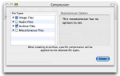
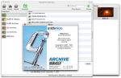

What's new in Stuffit Archive Manager 12?
StuffIt Archive Manager 12 benefits from the addition of scheduling and automatic archiving features. Combined with StuffIt X compression, StuffIt Archive Manager’s new features now provide you with the most efficient way to backup all of your important files.
NEW FEATURES |
|
|  |
Stuffit Archive Manager version 12 now includes new technology that provides highly efficient compression of MP3s, PDFs and common image formats such as PNG, GIF, BMP, TIFF and more. Stuffit Archive Manager 12 also includes new technology that provides our best ever compression of documents created by Apple’s iWork and the new Open XML-based file format introduced by Microsoft in Office 2007. |
PERFORMANCE AND STABILITY ENHANCEMENTS |
|
|  |
The integration of many of your favorite features from Stuffit Archive Assistant into Stuffit Archive Manager 12 make this a powerful, one-stop solution for all of your archiving and backup needs. |